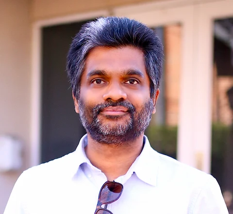
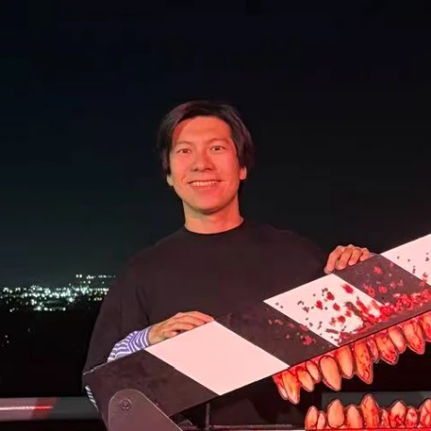

Spatial perception
Recognize relations, depth, and orientation already present in an image.
Illustration of a 3 × 3 × 3 assembly.
Vision-language models struggle to maintain geometric consistency across fragments, viewpoints, and reasoning steps. This workshop examines these limitations and methods for improving spatial reasoning as task complexity increases.
The program brings together researchers in multimodal learning, embodied AI, and constraint reasoning through invited talks, contributed papers, posters, a competition, and a panel.
Recognize relations, depth, and orientation already present in an image.
Construct and maintain globally consistent structures under geometric constraints.
Spatial relations, depth, size, orientation, perspective-taking, and generalization across viewpoints.
Combining appearance evidence with geometric constraints in reassembly, multi-step assembly, and grid reasoning.
Visual tokenization, resolution, positional encodings, spatial memory, combinatorial decoding, and locating where geometric information is lost.
Pairing VLM proposals with constraint solvers, search, and classical methods for geometric compatibility.
Spatial pretext tasks, exactly verifiable construction tasks, and reinforcement learning with verifiable rewards.
Uniqueness guarantees, machine-checkable answers, contamination resistance, and metrics that distinguish local from global correctness.
Manipulation, assembly, navigation, and world models—and whether benchmark gains transfer to physical competence.

University of North Carolina
at Chapel Hill
University of California,
Merced
Northwestern
University
University of
Southern California
We invite research and position papers on the topics above.
Original research with substantive contributions.
Early results, focused studies, and new arguments.
Recently published work, for presentation only.
Every accepted paper will be presented as a poster. Selected papers will also receive an oral presentation slot.
Recover the original positions of shuffled, interlocking image pieces using visual evidence and geometric constraints.
Each instance is verified by a constraint solver to have exactly one solution.
Planned competition · Dates, data, baselines, and evaluation code to be announced.
Use API-only models with zero-shot prompting.
Fine-tune open-weight models or apply reinforcement learning post-training under a declared compute budget.
Combine vision-language models with external constraint solvers.
Four talks · 15 minutes each
Four talks · 15 minutes each

University of Southern California
Main contact ↗University of Southern California
Contact ↗Carnegie Mellon University
Contact ↗Arizona State University
Contact ↗University of Southern California
Contact ↗